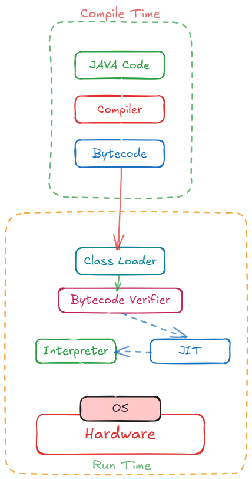
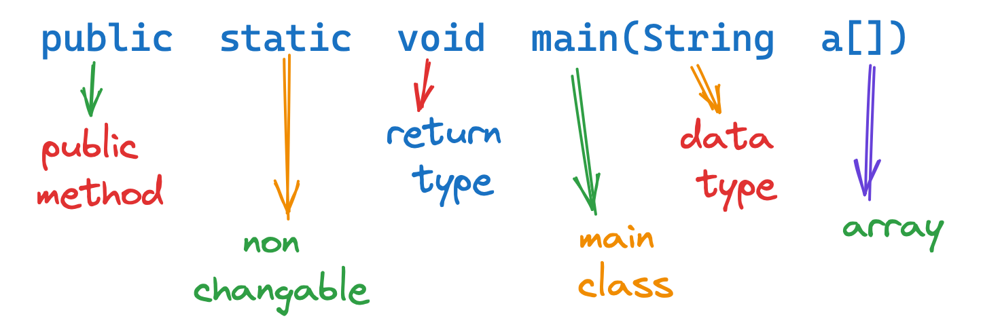
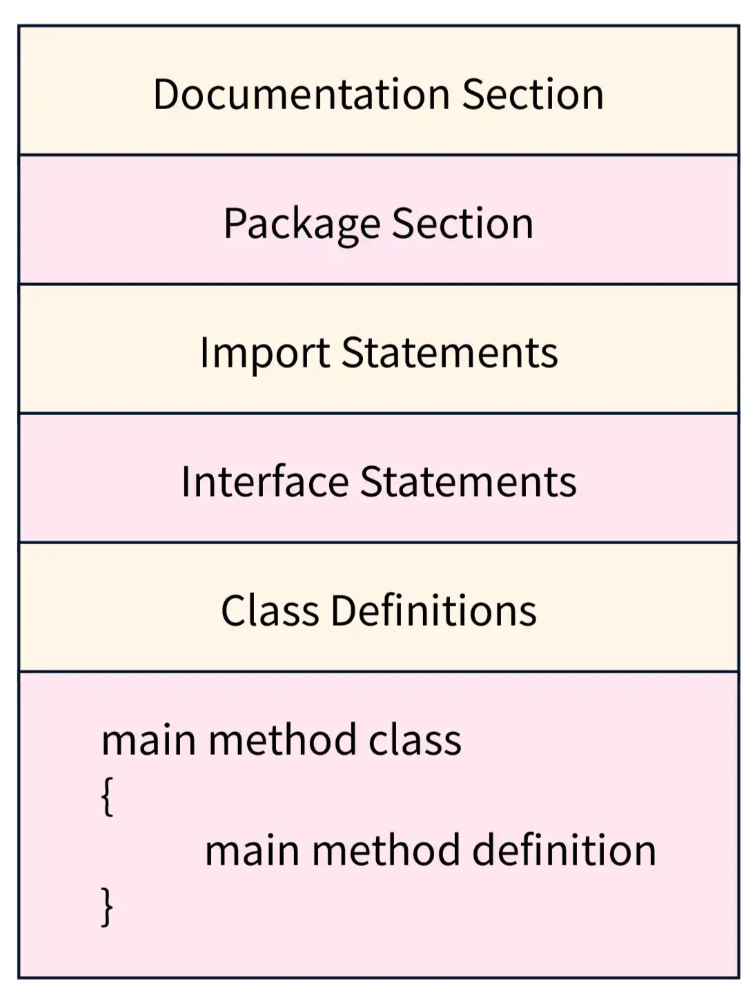
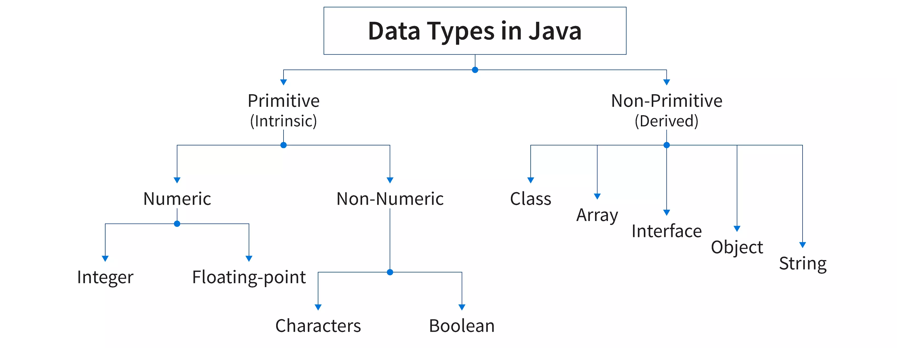
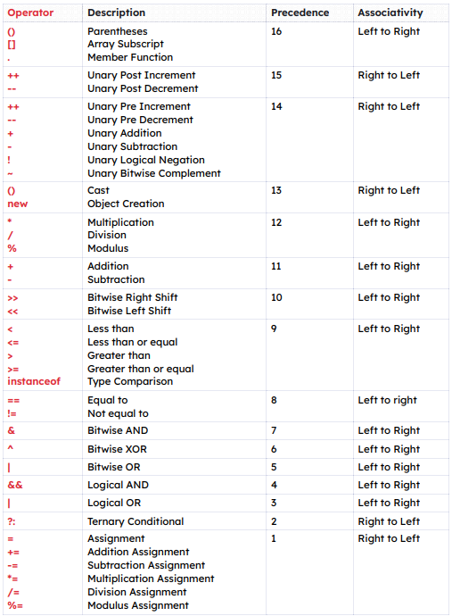

01: Principles of OOP
02: Java Essentials
03: Java Compilation Process
04: Java Virtual Machine
05: Just In Time (JIT)
06: First Simple Program
07: Java Program Structure
08: Variables
09: Data Types
10: Identifiers
11: Literals
12: Operators
13: Precedence in Java
14: Decision Making Statements
15: Loops
16: Jump Statements
17: Class
18: Instance Variable
19: Constructor
Principles of Object Oriented Language
Abstraction
- An essential element of object-oriented programming is abstraction.
- Humans manage complexity through abstraction.
- For example, people do not think of a car as a set of tens of thousands of individual parts.
- They think of it as a well-defined object with its own unique behaviour
- This abstraction allows people to use a car to drive to the grocery store without being overwhelmed by the complexity of the parts that form the car.
- They can ignore the details of how the engine, transmission, and braking systems work.
- Instead, they are free to utilize the object as a whole.
Encapsulation
- Encapsulation is the mechanism that binds together code and the data it manipulates, and keeps both safe from outside interference and misuse.
- One way to think about encapsulation is as a protective wrapper that prevents the code and data from being arbitrarily accessed by other code defined outside the wrapper.
- Access to the code and data inside the wrapper is tightly controlled through a well-defined interface.
- To relate this to the real world, consider the automatic transmission on an automobile.
- It encapsulates hundreds of bits of information about your engine, such as how much you are accelerating, the pitch of the surface you are on, and the position of the shift lever.
- You, as the user, have only one method of affecting this complex encapsulation: by moving the gear-shift lever.
- You can't affect the transmission by using the turn signal or windshield wipers, for example.
- Thus, the gear-shift lever is a well-defined (indeed, unique) interface to the transmission.
- Further, what occurs inside the transmission does not affect objects outside the transmission.
- For example, shifting gears does not turn on the headlights!
Inheritance
- Inheritance is the process by which one object acquires the properties of another object.
- This is important because it supports the concept of hierarchical (that is, top-down) classification.
- For example, a Golden Retriever is part of the classification dog, which in turn is part of the mammal class, which is under the larger class animal.
- Without the use of hierarchies, each object would need to define all of its characteristics explicitly.
- However, by use of inheritance, an object need only define those qualities that make it unique within its class.
- It can inherit its general attributes from its parent.
- Thus, it is the inheritance mechanism that makes it possible for one object to be a specific instance of a more general case.
Polymorphism
- Polymorphism (from the Greek, meaning "many forms") is a feature that allows one interface to be used for a general class of actions.
- The specific action is determined by the exact nature of the situation.
- Extending the dog analogy, a dog's sense of smell is polymorphic. If the dog smells a cat, it will bark and run after it. If the dog smells its food, it will salivate and run to its bowl. The same sense of smell is at work in both situations.
- The difference is what is being smelled, that is, the type of data being operated upon by the dog's nose! This same general concept can be implemented in Java as it applies to methods within a Java program.
Java Essentials
Syntax:
-
The core topics for Java syntax include:
- What is an Object
- What is a Class
- What is a variable
- What is a method
System.out.println()method- Primitive types
- String
- Basic arithmetic and logical operators
- if-else statement
- Loop statements
- Arrays
Object Oriented Programming:
- Java programming is mostly about object oriented.
- This is the reason when you are starting out with Java, you must have a good understanding of OOP.
- This won’t be difficult to learn, but it involves a lot of practice.
- Begin by understanding what an object is, how diverse attributes can be and how these are presented in Java.
Collection Framework:
- It offers an architecture to collect and exploit groups of objects.
- By utilising collections you can perform specific data operations such as modification, insertion, deletion, etc.
- Knowledge of collection is considered crucial for interviews as well as live projects.
- Often during an interview, you will be required to steer through collections and their features.
Exceptions:
- It is an unusual situation, but you should learn about them and it is not that complex.
- It is a great way for simplifying bug detection and widely used by Java programmers.
Generics:
- Generics facilitate an alternative to rigid definitions of the types of use. At first you won’t find this topic complicated. The more grasp you have on this the better you will be able to code.
Multithreading:
- This can be difficult to learn for beginners. However, it is not considered an essential topic to master especially during interviews. As a beginner you might not be actually applying multithreading in any project but it will come handy later on.
Java Compilation Process

Java Virtual Machine
- The key that allows Java to solve both the security and the portability problems just described is that the output of a Java compiler is not executable code. Rather, it is bytecode.
- Bytecode is a highly optimized set of instructions designed to be executed by the Java run-time system, which is called the Java Virtual Machine (JVM).
- That is, in its standard form, the JVM is an interpreter for bytecode.
Just In Time (JIT)
- Although Java was designed for interpretation, there is technically nothing about Java that prevents on-the-fly compilation of bytecode into native code.
- Along these lines, Sun has just completed its Just In Time (JIT) compiler for bytecode, which is included in the Java 2 release.
- When the JIT compiler is part of the JVM, it compiles bytecode into executable code in real time, on a piece-by-piece, demand basis.
- It is important to understand that it is not possible to compile an entire Java program into executable code all at once, because Java performs various run-time checks that can be done only at run time.
- Instead, the JIT compiles code as it is needed, during execution. However, the just-in-time approach still yields a significant performance boost.
- Even when dynamic compilation is applied to bytecode, the portability and safety features still apply, because the run-time system (which performs the compilation) still is in charge of the execution environment.
- Whether your Java program is actually interpreted in the traditional way or compiled on-the-fly, its functionality is the same.
First Simple Program
// Example.java
class FirstProgram
{
// Your program begins with a call to main().
public static void main(String args[])
{
System.out.println("Hello World");
}
}-
The first line
Class FirstProgramdeclares a class, which is an object-oriented construct. - As stated earlier, java is true object oriented language and therefore, everything must be placed inside a class.
-
Every class definition in java begins with an opening brace
{and ends with a matching closing brace} -
The third line
public static void main(String args[])defines a method named main. Conceptually, this is similar to the main() function in C/C++.

-
Every java application program must include the
main()method. -
The keyword
publicis an access specifier that declares the main method as unprotected and therefore making it accessible to all other classes -
The keyword
staticdeclares this method as one that belongs to the entire class and not a part of any objects of the class. -
The type modifier
voidstates that the main method does not return any value -
All parameters to a method are declared inside a pair of
parentheses. Here,
String a[]declares a parameter nameda,which contains an array of objects of the class type String. - This is the starting point for the interpreter to begin the execution of the program.
- A java application can have any number of classes but only one of them must include a main method to initiate the execution.
Java Program Structure
- A Java program may contain many classes of which only one class defines a main method.
- Classes contain data members and methods that operate on the data members of the class.
- Method may contain data type declarations and executable statements.
- To write a java program, we first define classes and then put them together.

-
Documentation Section:
- The documentation section comprises a set of comment lines giving the name of the program, the author and other details.
- Comments would greatly help in maintaining the program.
-
Java uses a third style of comment
/**...*/known as documentation comment. - This form of comment is used for generating documentation automatically.
-
Package Statement:
- The First statement allowed in java file is a package statement.
- This statement declares a package name and informs the compiler that the classes defined here belong to this package.
- Example:
package student;
-
Import Statements:
- The next thing after a package statement (but before any class definition) may be a number of import statements.
- Example:
Import student.test; - This statement instructs the interpreter to load the test class contained in the package student.
- Using import statements, we can have access to classes that are part of other named packages.
-
Interface Statements:
- An interface is like a class but includes a group of method declarations.
- It is used only when we wish to implement the multiple inheritance feature in the program.
-
Class Definitions:
- A java program may contain multiple class definitions.
- Classes are the primary and essential elements of a java program.
- The number of classes used depends on the complexity of the problem.
-
Main Method Class:
- Every java program requires a main method as its starting point, this class is the essential part of a java program.
- A simple java program may contain only this part.
- The main method creates objects of various classes and establishes communications between them.
- On reaching the end of main the program terminates.
Variables
- The variable is the basic unit of storage in a Java program.
- A variable is defined by the combination of an identifier, a type, and an optional initializer.
- In addition, all variables have a scope, which defines their visibility, and a lifetime.
- In Java, all variables must be declared before they can be used.
-
The basic form of a variable declaration is :
type identifier = value; - Example:
int num = 10;
Dynamic Initialization:
- Although the preceding examples have used only constants as initializers, Java allows variables to be initialized dynamically, using any expression valid at the time the variable is declared.
- For example
// Demonstrate dynamic initialization.
class DynInit {
public static void main(String args[]) {
double a = 3.0, b = 4.0;
// c is dynamically initialized
double c = Math.sqrt(a * a + b * b);
System.out.println("Hypotenuse is " + c);
}
}Data Types

-
Primitive Data Types:
- Java defines eight simple (or elemental) types of data: byte, short, int, long, char, float, double, and Boolean. These can be put in four groups
- Integers This group includes byte, short, int, and long, which are for whole-valued signed numbers.
- Floating-point numbers This group includes float and double, which represent numbers with fractional precision.
- Characters This group includes char, which represents symbols in a character set, like letters and numbers.
- Boolean This group includes Boolean, which is a special type for representing true/false values.
-
Non-Primitive Data Type:
- Class contains a set of properties and methods that are common and exhibited by all the objects of the class.
- Array are used to store elements of the same data type in a contiguous manner
- Interface in Java is a tool to achieve abstraction. Interface can contain non-implemented methods (without the method body) also known as abstract methods.
- Strings are capable of containing sequences of characters within a single variable
Identifiers
- Identifiers are used for class names, method names, and variable names.
- An identifier may be any descriptive sequence of uppercase and lowercase letters, numbers, or the underscore and dollar-sign characters.
- They must not begin with a number, lest they be confused with a numeric literal.
-
Again, Java is case-sensitive, so
VALUEis a different identifier thanValue.
Literals
- A constant value in Java is created by using a literal representation of it.
-
For example, here are some literals:
10098.6'X'"This is a test" - The first literal specifies an integer, the next is a floating-point value, the third is a character constant, and the last is a string.
- A literal can be used anywhere a value of its type is allow
Operators
Unary Operator
| Symbol | Operator Name | Description |
|---|---|---|
| - | Unary Minus | It is used to denote a negative value. |
| + | Unary Plus | It is used to denote a positive value. |
| - - | Decrement Operator | Decrements value by 1 |
| ++ | Increment Operator | Increments value by 1 |
| ! | Logical Complement Operator | Reverse the value of boolean variable |
Arithmetic Operators
| Operator Name | Operator | Description |
|---|---|---|
| Addition Operator | + | Addition of two numbers |
| Subtraction Operator | - | Subtraction of two numbers |
| Multiplication Operator | * | Multiplication of two numbers |
| Division Operator | / | Division of two numbers |
| Modulus Operator | % | Return remainder after dividing two numbers |
Assignment Operators
| Operator | Description |
|---|---|
| = | To assign a value |
| += | To add a value |
| -= | To subtract a value |
| *= | To multiply a value |
| /= | To divide a value |
Relational Operators
| Operator | Name |
|---|---|
| == | Equal to |
| != | Not equal |
| > | Greater than |
| < | Less than |
| >= | Greater than or equal to |
| <= | Less than or equal to |
Logical Operator
| Operator | Example | Description |
|---|---|---|
| Logical AND | cond1 && cond2 | Returns true only if both cond1 and cond2 are true |
| Logical OR | cond1 \ cond2 | Returns true if atleast one of cond1 and cond2 is true |
| Logical NOT | !cond | Returns the opposite of input argument cond |
| Logical XOR | cond1 ^ cond2 | Returns true only if cond1 and cond2 are different |
Bitwise Operators
| Operators | Symbol | Uses |
|---|---|---|
| Bitwise AND | & | num1 & num2 |
| Bitwise Exclusive OR (XOR) | ^ | num1 ^ num2 |
| Bitwise Inclusive OR | \ | |
| Bitwise Complement | ~ | ~ num |
| Bitwise Left shift | << | num1 << num2 |
| Bitwise Right shift | >> | num1 >> num2 |
| Unsigned Right Shift Operator | >>> | num1>>>num2 |
Ternary Operator
-
Syntax:
Variable = Condition ? Expression1 : Expression2
Precedence in Java

Decision Making Statements
-
ifStatement:-
It tells the program to execute a certain section of code only
if a particular test evaluates to
true.
-
It tells the program to execute a certain section of code only
if a particular test evaluates to
// if statement
int x = 16;
if(x > 0){
System.out.println(“x is greater than 0”);
}-
if-elseStatement-
The
if-elsestatement provides a secondary path of execution when anifclause evaluates tofalse
-
The
// if-else statement
int x = 16;
if(x > 0){
System.out.println(“x is greater than 0”);
} else {
System.out.println(“x less than 0”);
}
-
Nested
if-elseStatement:-
Nesting of
if-elsemeans oneif-elseor simpleifas the statement part of anotherif-else or simpleifstatement
-
Nesting of
-
switch caseStatement:-
The
switchstatement allows for any number of possible execution paths.
-
The
// switch statement
switch(num)
{
case0:
System.out.println(“You have entered ZERO\n”);
break;
case1:
System.out.println(“You have entered ONE\n”);
break;
case2:
System.out.println(“You have entered TWO\n”);
break;
default:
System.out.println(“Other than 0,1,2\n”);
}
Loops
-
whileLoop-
The
whilestatement continually executes a block of statements while a particular condition istrue
-
The
// while loop
int t=1;
while(t<=10){
System.out.print(t+” “);
t++;
}
-
do...whileLoop- It is similar to while loop with the difference that condition is checked at the end, instead of being checked at the beginning.
- Just because of this the do-while loop is called bottom-testing loop or exit controlled loop
// do...while Loop
int t=1;
do{
System.out.print(“ “+t);
t++;
} while(t<=10);
-
forLoop-
The
forstatement provides a compact way to iterate over a range of values
-
The
// for Loop
for(t=100;t>=10;t=t-10){
System.out.print(“ “+t);
}
Jump Statements
-
breakStatement-
The
breakstatement is used to come out early from a loop without waiting for the condition to becomefalse.
-
The
// break Statement
int x=1;
while(x<=5){
if(x==3){
break;
}
System.out.println(“Inside the loop “+x);
x++;
}
System.out.println(“Outside the loop “+x);
-
continueStatement-
The
continuestatement causes the remainder of the statements following continue to be skipped and continue with the next iteration of loop.
-
The
// continue Statement
int t=0;
while(t<=10) {
t++;
if(t%2!=0){
continue;
}
System.out.println(“ “+t);
}
Class
- A class is a collection of objects of similar type. Once a class is defined, any number of objects can be produced which belong to that class.
- Classes provide a convenient method for packing together a group of logically related data items and functions that work on them.
- In java, the data items are called fields and the functions are called methods.
- Objects are instances of the Class. Classes and Objects are very much related to each other. Without objects you can't use a class.
// Class Declaration
class classname {
//ClassBody
}
Instance Variable
- All variables are also known as instance variable.
- This is because of the fact that each instance or object has its own copy of values for the variables.
-
Hence other use of the
.(dot) operator is to initialize the value of variable for that instance.
Constructor
- Constructor is special member function of the class.
- The name of a constructor must be the name of the class.
- Constructor is used to initialize the values to the data member of the class.
- Constructor have no return type, even we cannot write even void before constructor.
- Constructor is called when object is created. Constructor can't be called explicitly.
- Constructor can be private, public or protected. Constructors cannot be abstract, final, native, static, or synchronized.
- Just like member functions, constructors can also be overloaded in a class.
- Constructor can be invoked called by its derived class.
Types of Constructor:
-
Without Argument Constructor:
- If we don't want to pass any value at the time of creation of the object and want to initialize something that time we can create without argument constructor.
- Constructor without parameter or say argument is known as without argument constructor.
- Objects which call without argument constructor have same values in its field.
-
With Argument Constructor:
- With Argument Constructor also known as parameterized constructor.
- Parameterized constructors are required to pass parameters on creation of objects.
- Here all the objects have different unique distinct copies.
- Because they passed value at the time of calling parameterized constructor.
-
Default Constructor:
- If we don't define a constructor, then the compiler creates a default constructor. This generated constructor is called a default constructor.
- It's not visible in our code, but it's there just the same.
- Remember Default constructors are created only if there are no constructors defined by us.
- If we do write a constructor for our class, Java does not generate a default constructor.
- Default constructors initialize 0 to all the numeric and NULL to all the objects.